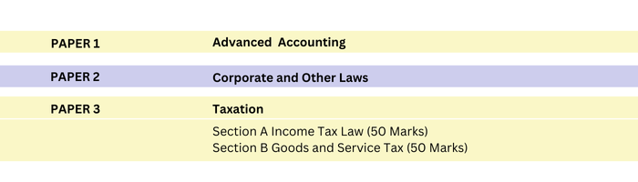
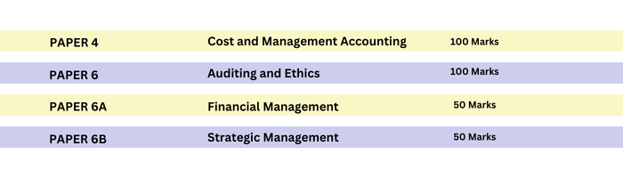

CA Intermediate Course
DESCRIPTION
Students can register for Intermediate level of CA Course through two routes, namely:
- After qualifying Foundation Course, or
- Through Direct Entry, if candidates are Graduates/Post Graduates with prescribed percentage of marks or have qualified the Intermediate Level examination of The Institute of Cost Accountants of India/ The Institute of Company Secretaries of India.
DIRECT ENTRY ROUTE
The ICAI allows the following candidates to enter directly to its Intermediate Course:
- Commerce Graduates/Post-Graduates (with minimum 55% marks) or Other Graduates/ Post-Graduates (with minimum 60% marks) and
- Intermediate level passed candidates of The Institute of Company Secretaries of India and The Institute of Cost Accountants of India. or Candidates who have passed the Intermediate level examination conducted by The Institute of Cost Accountants of India or by The Institute of Company Secretaries of India are exempted from qualifying Foundation and can register directly to Intermediate Course.
Provisional Registration
Candidates who are pursuing the Final Year Graduation/Post Graduation Course shall be eligible for provisional registration to the Intermediate Course which shall be confirmed only on submission of satisfactory proof of having passed the Graduation/Post Graduation examination with the minimum marks as mentioned above, before making the application for admission to Intermediate Examination.
And if the candidate fails to secure minimum marks as mentioned above before making the application for admission to Intermediate Examination, his provisional registration shall be cancelled, no credit shall be given for the theoretical education undergone and the Council may on receipt of an application from a candidate who is unable to produce the satisfactory proof referred to in this regulation, permit refund of such amount of registration and tuition fee, as may be decided by it from time to time.
Conversion to Direct Entry Route
Existing Students of Common Proficiency Course/Foundation Course on being eligible to join Intermediate Course through Direct Entry Route can any time register for Intermediate Course through Direct route by paying the Intermediate Registration fees only.
Existing Students of Intermediate Course through CPT/ Foundation Course on being eligible to join Intermediate Course through Direct Entry Route will apply for conversion to Intermediate through Direct Entry Route.
Registration Procedure
ICAI has a centralised Self Service Portal to manage the process of registration. All administrative interactions throughout the life cycle of students covering Intermediate and Final courses are done through this portal and there is no need for personal visit or submission of physical documents. Students need to submit self-attested documents online by visiting https://www.icai.org/post/students-services.
Direct Entry students may also register by filling Online Registration Form given on the Page. Click on the link - Entry level forms [Foundation and Intermediate (Direct Entry)]. Students of Foundation route can also convert to Direct Entry route by logging into Self-Service Portal and follow the process of conversion. On completion of the registration process, the study material can be ordered by the students through Centralized Distribution System (CDS) Portal, i.e. icai-cds.org.
| Registration including Various charges | Both Groups (Rs) | Both Groups (US$) |
|---|---|---|
| Registration Fee | 15,000* | |
| Students' Activities Fee | 2,000 | |
| Registration fee as articled assistant | 1,000 | |
| Total Fees | 18,000 | $ 1,000 |
ADMISSION TO INTERMEDIATE EXAMINATION
-
Students shall be admitted to Intermediate Examination if:
- He is enrolled for the Intermediate Course.
- He produces a certificate to the effect that he has undergone a study course, for a period not less than eight months as on the first day of the month in which the examination is held.
- Students shall pay Examination fees, as may be fixed by the Council for Intermediate Examination.
- The subjects of Intermediate Course are classified into two groups with 3 papers each. The students can study and appear in the Examination group-wise or both the groups together.
Passing Criteria
A student may appear in both the groups simultaneously or in one group in one examination and in the remaining group in any subsequent examination. He is declared to have passed the Intermediate examination, if he passes both the groups. The provisions are as under:
- A student shall ordinarily be declared to have passed in both the Groups simultaneously, if he:
- Secures at one sitting a minimum of 40% marks in each paper of each of the Groups, viz, Group-I and Group-II, and minimum of 50% marks in the aggregate of all the papers of each of the Groups. or
- Secures at one sitting a minimum of 40% marks in each paper of both the Groups, viz., Group-I and Group-II and minimum of 50% marks in the aggregate of all the papers of both the Groups taken together.
-
A student shall be declared to have passed in a Group if he:
- Secures at one sitting a minimum of 40% marks in each paper of Group and minimum of 50% marks in the aggregate of all the papers of that Group.
Papers at Intermediate Level
Group I

Group II

EXEMPTION
A student who appeared in all the papers comprised in a Group/Unit and fails in one or more papers in that Group/Unit but secures a minimum of 60% marks in any paper(s) of that Group/Unit shall be eligible for exemption in that paper(s) in the next three following examinations. Which means that while he is availing the benefit of exemption secured in paper(s) during previous examination, he shall have to qualify the remaining papers in any of the next three following examinations.
He shall be declared to have passed in that Group/Unit if he secures at one sitting a minimum of 40% marks in each of the papers of that Group/Unit and a minimum of 50% of the total marks of all the papers of that Group/Unit including the paper(s) in which he had secured a minimum of 60% marks in the earlier examination.He shall not be eligible for any further exemptions in the remaining paper(s) of that Group/Unit until he has exhausted the exemptions already granted to him in that Group/Unit.
If a candidate has exhausted the exemption granted to him under sub-regulation (8) of Regulation 37E and he was not able to pass the said Group or Unit, he may opt for the continuing of said exemption to the subsequent examinations. However, in such a case, such candidate shall be required to obtain a minimum of fifty per cent marks in each of the remaining paper/s of that Group or Unit in order to declare him to have passed in that Group or Unit.